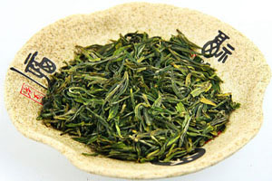
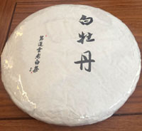
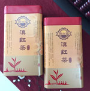
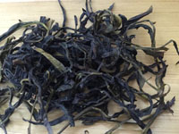
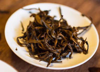
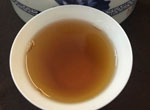

1、绿茶：分为炒青绿茶、烘青绿茶、晒青绿茶、蒸青绿茶。其中西湖龙井、黄山毛峰、六安瓜片、太平
猴魁、碧螺春、恩施玉露、信阳毛尖、安吉白茶、南京雨花茶等为绿茶中的优质茶类。
炒青绿茶包括珍眉、贡熙、雨茶、针眉、秀眉、珠茶、雨茶、秀眉、蒙顶甘露、龙井、大方、碧螺春、
雨花茶、甘露、松针等茶品。烘青绿茶包括川烘青、苏烘青、浙烘青、徽烘青、闽烘青、毛峰、太平猴
魁、华顶云雾等茶品。晒青绿茶包括川青、滇青、陕青等茶品。蒸青绿茶包括煎茶、玉露等茶品。
 2、白茶：分为芽茶、叶茶。白茶中的茶品有白毫银针、白牡丹、寿眉、贡眉、新工艺白茶等。 其中芽茶包括白毫银针等茶品。叶茶包括白牡丹、寿眉、贡眉、新工艺白茶等茶品。

3、红茶：分为小种红茶、工夫红茶、红碎茶。其中正山小种、金骏眉、祁门红茶、云南滇红、坦洋工夫
、政和工夫、白琳功夫、川红工夫等茶品味红茶中的优质茶类。
小种红茶包括正山小种、外山小种等茶品。工夫红茶包括滇红、闽红、湖红、川红、越红、湘红、粤红
等茶品。红碎茶包括叶茶、碎茶、片茶、末茶等茶品。

4、乌龙茶：又称青茶，分为闽北乌龙、闽南乌龙、广东乌龙、台湾乌龙。其中大红袍、铁观音、水仙、
肉桂、凤凰单枞、冻顶乌龙等无乌龙茶中的优质茶类。
闽北乌龙包括大红袍、水仙、肉桂、半天腰、奇兰、八仙等茶品。闽南乌龙包括铁观音、奇兰、水仙、
黄金桂等茶品。广东乌龙凤凰单枞、凤凰水仙、岭头单枞等茶品。台湾乌龙包括冻顶乌龙，包种等茶品。

5、黄茶：包括黄芽茶、黄小茶、黄大茶。其中君山银针、霍山黄芽、蒙顶黄芽、皖西黄大茶、广东大叶
青、北港毛尖、沩山白毛、平阳黄汤等为黄茶中的优质茶类。
黄芽茶包括君山银针、霍山黄芽、蒙顶黄芽等茶品。黄小茶包括北港毛尖、沩山白毛尖、远安鹿苑、皖
西黄小茶、平阳黄汤等茶品。黄大茶包括皖西黄大茶、广东大叶青、贵州海马宫茶等茶品。

6、黑茶：包括湖南黑茶、四川黑茶、云南黑茶、湖北黑茶。其中安化黑茶、雅安黑茶、普洱茶、湖北老
青茶、四川边茶等茶品为黑茶中的优质茶品。
湖南黑茶包括安化黑茶等茶品。四川黑茶包括四川边茶等茶品。云南黑茶包括普洱茶等茶品。湖北黑茶
包括湖北老青茶等茶品。